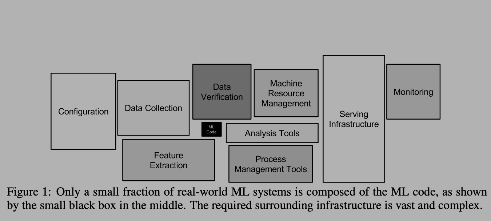
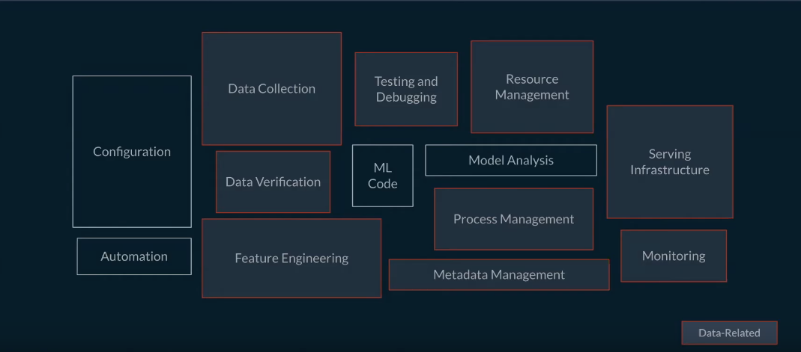

In this post, I’ll talk about Feature Store: an essential component of a modern Machine Learning infrastructure. We’ll first briefly look at what a production ML system consists of and where does a Feature Store fit into it. I’ll then dive into some core problems that a Feature Store is supposed to solve and go over some possible solutions to these problems. A combination of these solutions essentially builds up a Feature Store infrastructure.
Production ML systems:
First, let’s see what differentiates a real-world production ML systems with ML research prototypes, Kaggle based machine learning competitions, and the projects in ML courses. The distinction is best summarized in the diagram below:

As we can see, the part where actual ML modeling happens (indicated with ML Code) is a tiny portion of a much larger system. Traditionally, in college courses and online MOOCs a large emphasis is placed on ML Code. I think the primary reason is that it is difficult to teach and assess some of the other skills shown in the diagram. However, the other boxes make up most of what a production-grade ML system looks like.
If Machine Learning is a major aspect of your business, then having a strong infrastructure around your ML Code is must. I like to compare it to traditional large scale software systems where it is a must to have a version-controlled code base, CI/CD pipelines, compute and data infrastructure support, etc. for engineers to be effective and for your technical pillar to be strong.
Since ML is a relatively new software paradigm, a lot of the support around ML systems is either missing or is still developing. As mentioned by Andrej Karpathy in his talk, we need to build a new software stack for AI and ML, and managing data/features (in addition to code) is a big aspect of this new stack.
In this post, I want to dive into a specific piece of infrastructure that deals with features: the data that helps you build your ML models and make your ML products successful. At least when it comes to structured data, a large part of ML use-cases is designing good features for your models. However, it doesn’t stop at that. If you are running a business on machine learning, then you want to know the following about your features: - is it available offline for Training and online for Serving - how does one read/load features offline and online - is there consistency between offline and online computations - how good is the quality of features - who is producing these features - who is consuming these features - are there SLAs around some/all of these features - how does one team discover features created by other
There are many more such questions that need to be answered about the data goes into your ML models, and the models that power your business. Hence, there is a need for good tooling and infrastructure around features. Feature Store is a relatively new infrastructure solution to answer these questions. Though there are not a lot of mainstream solutions out there, big tech companies in ML space have built some custom infrastructure for this.
Note: There are now companies like Tecton and Hopsworks who offer end-to-end enterprise grade solutions.
Feature Store
From the name it may seem like, we are building a data-store that stores our features, but it is much more than that. Below is a slide taken from Tecton’s talk to highlight (red boxes) the components that a good feature store will manage. 
For e.g. Serving Infrastructure consists of not just the model that is being served but also the features or feature-transformation logic.
Feature Store is thus not just a database for you to store and retrieve your features from. It is also the infrastructure to: create those features, manage metadata around the features, make features discoverable, make it shareable, make it consistently available offline and online, monitor the quality of the features, and in some cases even provide consistent API for performing feature engineering.
Now that we know what a feature store is roughly supposed to do, let’s dive into some core problems that Data scientists (DS) and Machine Learning Engineers (MLE) face and how a good Feature Store can solve those problems.
Feature Consistency
Feature consistency affects the ML use-cases where predictions are made in real-time, i.e. the predictions are not pre-computed, cached, and served as is without any computation at request time. In real-time serving, we get some request, extract features based on the request, feed it into the model and return the prediction. A fair number of business-driving production use-cases such as: CTR prediction, Search Ranking, Home Feed Ranking, Transaction Fraud Prediction, etc. fall under real-time serving use-case, so this is definitely a problem worth solving. Wait, what exactly is the problem here?
When a DS/MLE builds a model to solve a problem (e.g. CTR prediction), the process usually looks like this: 1. Get data from Data-warehouse or Datalake 2. Do feature engineering: transform your strings to one-hot, compute historical aggregates and so on (usually done in Python-based-stack: Pandas, NumPy, PySpark) 3. Train your model on these features, evaluate for quality 4. Make it available for serving
At serving time, you don’t have this full-fledged feature-vector ready, so how does one do feature-engineering/transformation online right before you feed your feature-vector to your model to make prediction. Where does that feature-engineering code live? DS/MLE wrote their feature engineering logic in Python in their notebook but how does it translate to your low-latency Java service? Let’s see some options.
Option 1: Duplicate the code
We can duplicate the code between offline training and online serving systems. Some companies do this by structuring ML teams such that DS write feature engineering code in Python in notebooks, MLE write the same code in Java for serving. In my opinion, this is quite risky especially if your training and serving environments are different (Python v/s Java). Moreover, it’s just bad practice to have duplicate code in different systems having to do the same thing. In addition to that, it’s really difficult to make sure that the computation between offline and online systems are exactly the same. A common way in which this problem surfaces is when your model performs really well offline but does poorly online. A good place to investigate this is to look at the features computed online. Having a good monitoring system to measure offline/online feature-drift also helps, though it doesn’t solve the core problem of having duplicated logic in 2 places in your ML system.
Option 2: Shared library for computation
Here, we do not have duplicate code but have a shared library that performs feature engineering. This is doable if your training and serving systems can use the same runtime environment. This becomes tricky with Pandas/NumPy based feature engineering (unless your serving system is in Python). However, this can be done if you use PySpark for feature engineering. PySpark being just a wrapper on top of Scala-Spark essentially performs computations on the JVM. So if your online low-latency serving system is in Java or other JVM-based system, this is a reasonable solution to feature consistency problem. This is what we do at Yelp for our Ads-targeting ML system. For more details, you can check out my blog on Yelp engineering
Option 3: One compute, Two DB
Here, we have features computed and loaded into an offline DW/Datalake as well as online database (such as Cassandra for high availability). This requires all features to be computed and stored in these data-stores. For training, we read from offline DB, for serving we read from online DB. There are two tricky aspects to this: 1. maintaining the two data stores in sync 2. making sure same computation logic computes features for both
There’s also a limitation that when you have to add new features you’ve to do a massive backfill (usually manually) and make it available offline for training. This backfill is needed because usually a model is trained on large historical time window (like past 3 months).
Most Feature Store infrastructure use this approach and solve the above-mentioned issues: shared computation logic and auto-backfills. Big tech companies in ML space (Facebook, Uber, Airbnb) have developed some sort of DSL for shared computation logic so developers don’t have to write the code twice, which is pretty neat. The DSLs are usually very domain and company specific so I am not sure how much of it can be widely adopted even if they open-source it.
Airbnb via Zipline provides an efficient way to perform backfill for different types of aggregations. Check out this video for how they do it.
Time travel
That sounds like sci-fi but it basically means, given a point of time in the past, what was the value of this particular feature at that point of time. DS/MLE often need this to create their dataset where they use existing labels at different point in time and collect historical aggregates from past until this point-in-time to create the ML models. Getting this right is really important to avoid label leakage.
This is often not available in traditional DB solutions unless for each schema that contains our features, we add an event-time column. And one can image this data growing to be super large to be stored in a traditional DB.
A more appropriate solution in this case is storing your snapshot or changelogs partitioned by time on Datalake. So we can store all the updates partitioned by date/time and we can write Spark/SQL queries on top of it to answer question such as: what was the average rating given by this user from January 2020 to March 2020.
Thankfully this is provided as ready-to-use solutions by AWS (using a bunch of AWS solutions such as S3, Glue, Athena, Kinesis), and Databricks Delta. Delta can work on top of your existing Datalake (S3, Azure blog storage, HDFS) and provide good data management solution on top of it.
A challenging aspect of this is to manage streaming data with change-logs on your datalake. Delta by Databricks provides a solution to this problem as well. One option is to not perform streaming updates, and run batch-incremental updates frequently on your changelogs, and this is usually good enough. For e.g. user’s last 90 days of historical aggregate (average 90 day CTR of a user) won’t change much every hour so it’s alright to do it on a snapshot once per day. However, if last 10 searches made by the user is important for your model then you need streaming updates.
Feature Engineering
This problem is very closely related to consistency problem, but this sits more close to DS/MLE rather than infrastructure folks. The problem is how to find a good set of libraries to do feature engineering and also have your feature definitions be consistent. For e.g. there are libraries such as Pandas and PySpark which DS/MLE use for feature engineering and these are pretty powerful, but they have their subtle differences which can go unnoticed. So if one DS is computing one-hot encoding in Pandas, that might differ from one-hot encoding done in PySpark. So how do we provide a single interface for all DS/MLE to do feature engineering.
Option 1: Provide a DSL
This is a considerable effort in my opinion, especially for small companies with a small engineering workforce, because it is partially reinventing the wheel. It has great returns (I believe) in the form of consistency between features, ease of use and deployment, ease of customization, improved iteration and development of new ML models. Big companies like Uber, Airbnb, Twitter have taken this approach and it has paid off well for them. They have thousands of ML models running in production created by hundreds of engineers. It’s upto us to figure out whether this massive investment will pay off.
Option 2: Use a single feature-engineering library
This can be limiting: what if this one library is not enough for your feature engineering needs? And can this library be used for serving too? Some solution around this is to have your feature engineering library be in a language that can be used for serving and provide wrappers on top of it for interactive languages such as Python. I believe this is what Twitter does by providing wrappers on top of Scala (I am not a 100% sure).
Option 3: Shareable format and execution
If we can come up with a format and execution engine that can take my feature engineering pipeline written in Python using Scikit-learn and serialize it into a format that can be used by my realtime inference service (possibly JVM based), then this problem is solved!
At Yelp, we have converged towards this solution. We don’t limit our DS/MLE to use a single library like Pandas or PySpark but any library/feature engineering transforms as long as they can be serialized into a shareable format: MLeap. For more about Yelp’s ML platform, check out this blog. MLeap is relatively new but really powerful as it allows us to go between different training and serving environments and not limiting ourselves by having to use only one single library for feature engineering. It is also really fast as can be seen here in the benchmarks.
There are caveats to this: not all transforms are available and serializable, but this is a growing community and I believe we’ll have a good range of feature engineering transforms available soon.
Apache Beam is also a solution in a similar vein that it decouples your computation logic (batch/streaming) with your serving environment by using a shareable Beam Model. I have not played around with this yet.
Reusable Dataset:
Most of the use-cases we discussed above (CTR prediction, search ranking, homefeed ranking, fraud detection) have a shared underlying theme: the underlying data changes very often and hence you really need to retrain your models often. To reduce the time to retrain and deploy fresher models, an often used solution is to materialize your dataset with newly arriving data points regularly, and then let your training batch pick up newly created rows, train a new model, evaluate it against older model and go into production. This is different from having a generalized Feature Store since datasets are very domain specific: a dataset created for CTR prediction cannot be used for ranking search results. However, they can share some same features (say user’s preference towards an item category) from the generalized Feature Store infrastructure.
Usually, long term cheap storage such as S3/HDFS is used to materialize datasets. It is also a good idea to materialize data in a format that’s suitable for your model-training library (TFRecord for Tensorflow, .npy for PyTorch, .h5 for Keras, parquet for Spark ML models).
Online serving
When DS/MLE train the models, their feature set usually comprises of hundreds of features taken from different DW/Datalake tables. But in the serving environment, a request consists of very basic information such as user_id, product_id, time_of_request, user’s platform (mobile/web), etc. The next important step is to hydrate this request to create a feature vector, in order to make predictions. This is where the online-feature-store comes in. It is usually keyed by your primary business entities (user, business, product) and consists of number of attributes/features about your entities using which you can create your feature vector. Sometimes additional transformation on top of these features is necessary. This is where Feature Engineering comes into play. Finally, the feature-vector is then sent to the model to serve real-time predictions. Apache Cassandra is often used to store features for online retrieval due to high throughput, availability, and scalability. Some other popular choices are MySQL and MongoDB.
Metadata management
The whole point of building a shareable feature store is to: 1. reduce the duplication of effort and feature computation between teams 2. have consistent definition of features (user_7d_clicks means the same thing to all the teams).
But how does one team discover features created by another? That’s where metadata management comes in. We need a system that manages metadata about our features and use this metadata to serve a web UI using which developers can discover and use existing features.
In a way, we want to build a marketplace of features where teams can create/use features from other teams. And just like any other marketplace, we need some key pieces of attributes about the products of this market: features. Some important attributes to know are: - who produced this feature (who is responsible) - who are the consumers of this feature (how popular is this feature, which model/dashboard is this feature powering) - what is the SLA of this feature (offline and online) (what guarantees does it come with) - how often is this feature refreshed/updated (how well maintained is it) - data lineage (what upstream log/data does this feature use)
In addition, we can build APIs on top of this metadata database to easily get and put features in the feature store.
Data governance
An often ignored aspect is data governance, i.e. having some security and monitoring layer on top of your features. Who has access to what should be controlled especially if you are a global business and working in environments with different restrictions (for e.g. using health data). This is also necessary to manage SI data.
Some data governance solutions provide profiling and cataloging capabilities such that different governance policies can be applied to different levels of sensitive data. Regular audits, quality checks, and monitoring is also a part of data governance. Lastly, encryption, data masking, and deletion of some data can also an important aspect especially if these data can introduce harmful bias in your ML systems.
Conclusion
This was a lot to take I imagine. But that’s because the problem of feature and data management in ML systems is not trivial. Above mentioned are only some of the main issues that slow down the iteration speed of organization to ship ML-based products. A well-maintained feature-store infrastructure comes a long way to shorten the ML lifecycle and make DS/MLE productive. It makes the life of DS/MLE easy by allowing them to focus on translating business use-cases to well-defined ML problems, perform feature engineering, build models, and deploy it without a lot of hassle.
In this post, we saw some of these issues and briefly discussed some possible solutions as well. In the next post, I will dive into a couple of commercially available feature stores, and perhaps also discuss some in-house feature stores by Uber and Airbnb. We’ll see how these feature-stores try to solve the problems around managing ML data and analyze some trade-offs.